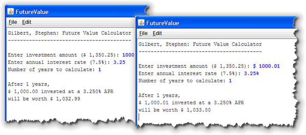
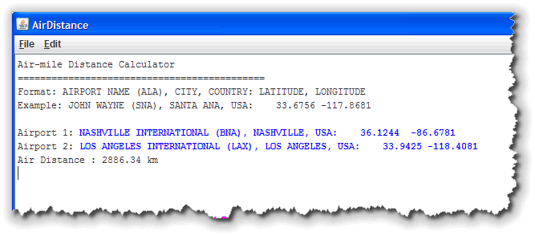
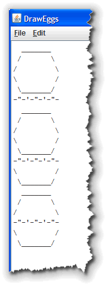

This week you'll do some exercises
using the functions in the Math and String
classes as well as some programs that use procedures.
-
Homework 08 (String Functions):
Write an ACM console program, ProcessName that asks the
user to enter their name in the form (First MI. Last) and then
prints the resulting name rearranged and labeled in the form
"Last, First MI." (including the quotes as shown below).
Use the
Stringfunctionssubstring(),indexOf(),lastIndexOf(),charAt()andtrim()to solve this problem. You may assume:- that every name will have exactly one word for the first and last names and a single character, followed by a period for the middle initial.
- There will be at least one space separating each of the portions of the input name, but there may be more spaces.
The program should look like this when it runs.
Format your code using the rules covered in lecture, as well as those found in the CS 170 style guide. Your program will be graded 10% on style. Submit only ProcessName.java to Web-Cat before the deadline. (5 points)
Solution -
Homework 09 (Math Functions) :
Write a complete Java ConsoleProgram in a
class named FutureValue that asks the user for an initial
investment, an annual interest rate and the number of years to
keep the money invested. Print the future value, assuming that the
interest is calculated monthly, as shown below.

Read the input as
Stringvariables and convert to the correct type before doing a calculation. For the investment amount, you should remove any "$", space or "," characters from the input string, using theString replace()function before converting to adoublevalue. For the annual percentage rate, you should remove any spaces and any percent signs. When I test your code, I'll test it using plain values (as on the left) as well as values containing these special characters (as on the right). That way, if you have difficulty with that portion, you'll still get partial credit.The formula to calculate the future value of the investment is:
Future Value = Investment x (1 + Monthly Rate)Number of Years x 12For your output, use the
String format()method and display three decimals for the rate, and a dollar sign and thousand separators (commas) for both the amount invested and the future value. Display only two decimal places for these amounts as shown in the picture.Format your code using the rules covered in lecture, as well as those found in the CS 170 style guide. Your program will be graded 10% on style. Submit only FutureValue.java to Web-Cat before the deadline. (5 points)
Solution -
Homework 10 (Procedural Decomposition) :
Write a complete Java ConsoleProgram in a
class named DrawEggs that prints the pattern shown
on the right. (Click the image to see it full size.)
Here are the requirements:
- You must use at least at least three procedures,
(not counting
run()andmain()). - Do not do any printing inside your
run()method. The only thing thatrun()should contain is procedure calls.
Make sure that you make each of the procedures that you write
public. If you use Eclipse to generate the procedure skeletons, it will initially make each oneprivate, and I will not be able to test it. This is a common mistake, so make sure that you check for it.Format your code using the rules covered in lecture, as well as those found in the CS 170 style guide. Your program will be graded 10% on style. Submit only DrawEggs.java to Web-Cat before the deadline. (5 points)
Solution - You must use at least at least three procedures,
(not counting
-
Extra Credit (Advanced and Challenging):
Write a complete Java ConsoleProgram in a
class named AirDistance that calculates the
number of air miles between two airports. Here's what
the program looks like when it runs (Click to see full size) :

The input for each line of input is formatted as shown in the picture. I've provided a text file of different airport locations, formatted in this manner, that you can use to test your program. After the location, the latitude and logitude are supplied in degrees. Southern latitudes and western longitudes are supplied as negative numbers as is required for the calculations.
You can solve this problem using only the math and string functions that we covered in lecture this week, but doing so will require extensive research on your own. You can find the formulas you'll need at http://en.wikipedia.org/wiki/Great-circle_distance.
Here are the basic pieces of information you'll need:
- Read the information for two airports into strings
- Extract the description, latitude and logitude for each
- Convert the latitudes and logitudes into
doublevariables named something likelat1,lng1,lat2, andlng2. - Latitude and longitude are in degrees but you
need them in radians. You can use one of the
GMathfunctions or just multiply each value by the valuePI / 180. - The formula for the spherical distance is
the radius of the earth (make a constant using
6371.01 km which is the average radius), multiplied
by the arc cosine of the sum of the product of the
sine of each latitude and the product of the cosine
of each latitude and the cosine of the difference
of the latitudes, like this:
 Using variables instead of the funny math symbols shown
here, the angular distance (which you multiply by the radius
of the earth to get the actual distance) is:
Using variables instead of the funny math symbols shown
here, the angular distance (which you multiply by the radius
of the earth to get the actual distance) is:
diffLng is the difference beteen the longitiudes
Angular Distance = arc cosine of (
sine lat1 x sine lat2 +
cosine lat 1 x cosine lat2 x cosine diffLng)There are other formulas you can use, referenced above. This is the simplest, but not most accurate.)
Format your code using the rules covered in lecture, as well as those found in the CS 170 style guide. Your program will be graded 10% on style. Submit only AirDistance.java to Web-Cat before the deadline. (5 points)
- Finish reading Chapter 4 and complete the Unit 3 Quiz online before the deadline.

Remember that all of these assignments are due before the deadline, so make sure you don't get "caught short".